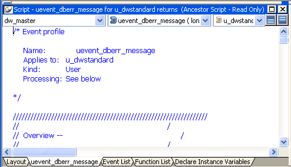
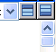

You use the Script view to code functions and events, define your own functions and events, and declare variables and external functions.
Script views are part of the default layout in the Application, Window, User Object, Menu, and Function painters. In Application, Window, and User Object painters, the initial layout has one Script view that displays the default event script for the object and a second Script view set up for declaring instance variables. You can open as many Script views as you need, or perform all coding tasks in a single Script view.
The Script view's title bar shows the name and return type of the current event or function, as well as the name of the current control for events and the argument list for functions. If the Script view is being used to declare variables or functions, the titlebar shows the type of declaration.
There are three drop-down lists at the top of the Script view:

In the first list, you can select the object, control, or menu item for which you want to write a script. You can also select Functions to edit function scripts or Declare to declare variables and external functions.
The second list lets you select the event or function you want to edit or the kind of declaration you want to make. A script icon next to an event name indicates there is a script for that event, and the icon's appearance tells you more about the script:
The same script icons display in the Event List view.
The third list is available in descendent objects. It lists the current object and all its ancestors so that you can view scripts in the ancestor objects.
A Prototype window displays at the top of the Script view when you define a new function or event. An Error window displays at the bottom of the view when there are compilation errors. You can toggle the display of these windows with the two toggle buttons to the right of the lists.

For more information about the Prototype window, see Chapter 8, "Working with User-Defined Functions ," and Chapter 9, "Working with User Events ."